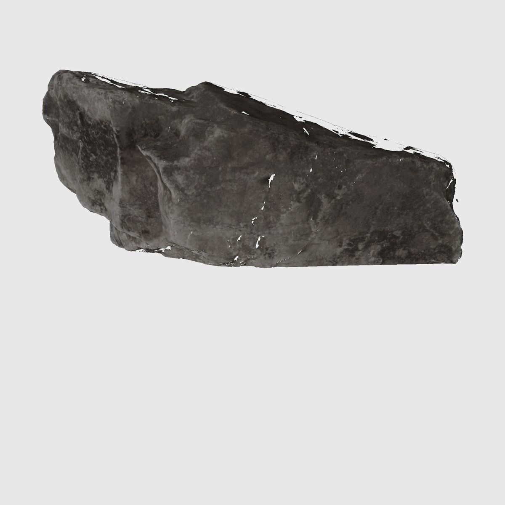

V6

真实融合结果；可见区域受观测约束，未知背面没有被证明。
模型可旋转；下方是原输入或明确标注的历史预览。候选变化并不自动意味着质量变好。完整模型、输入与冻结配置 SHA · 返回作品
真实融合结果；可见区域受观测约束，未知背面没有被证明。

原真实候选；阴影深度与多视角比较仍有失败。

原窄道第一块采纳候选；第二块全拒，原任务停车。

复用 V8 真实资产，重构工程与完整停止规则；不是一份新增生成。

实际关口任务 5027323；通过原自检，参与完整预演与执行。

实际任务 5125347，被拒；学习控制版本保留坏例，未放宽门槛。